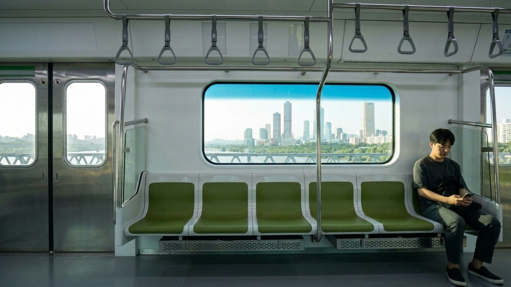
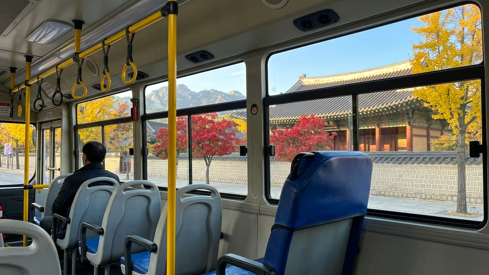
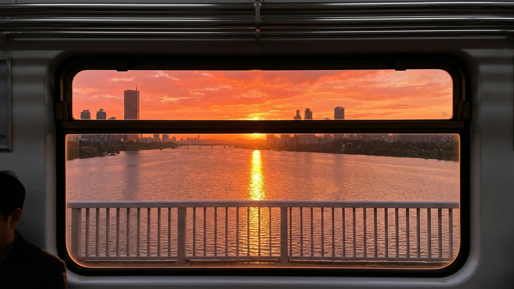
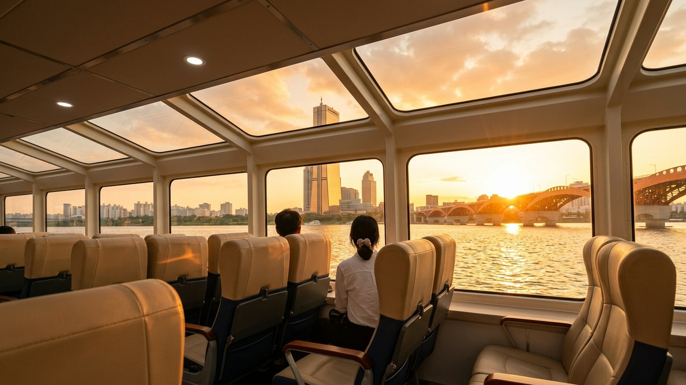

V.0.5.00 · CompeCanvas 3막 11컷 마스터 (56.68초)
1920×1080 (16:9 가로형)
실사 47매 고증: 지하철(롱시트·낮 당산철교·퇴근길 수직노을) · KTX · 시내버스 · 한강버스 + 3막 오픈프레임
『어서 와, 내 옆자리 창가 비워둘게』 — 실사 좌석·풍경 고증 11컷 스토리보드
“작은 휴대폰 화면에서 눈을 떼면 열리는 서울의 차창들, 그리고 밤에는 창문 밖으로 직접 걸어 나와도 다정하게 지켜주는 도시 — 이번 주말, 내 옆자리 비워둘게.”
CUT 01
1막 · 시선 발견 & KTX 서울 입성
1막 · 작은 화면 속 일상 (서울 지하철 7인석 파란 롱시트)
감정: calm
📐 Frame A · 실제 좌석·창틀 도입 구도

파란 7인석 직물 롱시트·타공 히터망·스텐 짐선반 — 고개 숙인 승객들 사이 폰을 보는 이지원
✨ Frame B · 시선 확장·서울 풍경 완성본 (클릭 시 1920×1080 원본)

이지원이 휴대폰을 무릎으로 내리고 미소 지으며 맞은편 창을 향해 고개를 듦
CUT 02
1막 · 시선 발견 & KTX 서울 입성
1막 · 타지역 친구의 서울 진입 (KTX·SRT 실제 좌석 & 창가 커피)
감정: curious
✨ Frame B · 시선 확장·서울 풍경 완성본 (클릭 시 1920×1080 원본)

KTX가 한강철교에 진입하며 넓은 라운드 창밖으로 푸른 한강과 남산서울타워가 펼쳐짐
CUT 03
2막 · 실제 대중교통 좌석 차창 여정 (낮~노을~야경)
2막 · 낮시간 한강 지하철 2호선 (연두색 롱시트 & 당산철교 하단 난간 뷰)
감정: happy
📐 Frame A · 실제 좌석·창틀 도입 구도

신형 2호선 연두색 5인 성형 롱시트·곡선 스텐봉·당산철교 하단 난간 위 은은한 아침 역광
✨ Frame B · 시선 확장·서울 풍경 완성본 (클릭 시 1920×1080 원본)

하단 철교 안전 난간 위로 깊고 푸른 한강·국회의사당 민트 돔·여의도 초고층 빌딩숲이 선명히 열림
CUT 04
2막 · 실제 대중교통 좌석 차창 여정 (낮~노을~야경)
2막 · 지상 전철 남산 파노라마 (2연속 상단 개폐창 & 파란 롱시트)
감정: happy
✨ Frame B · 시선 확장·서울 풍경 완성본 (클릭 시 1920×1080 원본)

2연속 전철 창틀 가득 쾌청한 파란 하늘·초록 남산 능선·남산서울타워·한강 다리 파노라마
CUT 05
2막 · 실제 대중교통 좌석 차창 여정 (낮~노을~야경)
2막 · 광화문 시내버스 외경 & 미닫이 차창 속 고궁 단풍길
감정: happy
✨ Frame B · 시선 확장·서울 풍경 완성본 (클릭 시 1920×1080 원본)

시내버스 내부 전방 시트·노란 안전봉·검은 2분할 미닫이 창밖으로 펼쳐지는 경복궁 단풍 돌담길
CUT 06
2막 · 실제 대중교통 좌석 차창 여정 (낮~노을~야경)
2막 · 한강 지하철에서 바라보는 노을 (상단 환기창 바 & 수직 황금 빛기둥)
감정: whisper
✨ Frame B · 시선 확장·서울 풍경 완성본 (클릭 시 1920×1080 원본)

붉게 타오르는 노을 구름과 63빌딩 실루엣 아래 한강 수면을 수직으로 가르는 눈부신 황금 빛기둥
CUT 07
2막 · 실제 대중교통 좌석 차창 여정 (낮~노을~야경)
2막 · 여의도 한강버스 선실 (천장 스카이라이트 창 & 연베이지 가죽 시트)
감정: whisper
📐 Frame A · 실제 좌석·창틀 도입 구도

실제 한강버스 크림 창틀·천장 스카이라이트 유리창·연베이지 가죽 시트(우드 팔걸이) 늦오후 뷰
✨ Frame B · 시선 확장·서울 풍경 완성본 (클릭 시 1920×1080 원본)

천장 스카이라이트에 노을 구름이 물들고 수면 눈높이 창밖으로 63빌딩과 황금빛 윤슬이 타오름
CUT 08
2막 · 실제 대중교통 좌석 차창 여정 (낮~노을~야경)
2막 · 여의도 한강버스 야간 운항 (동일 스카이라이트 선실 & 반포 무지개분수)
감정: calm
📐 Frame A · 실제 좌석·창틀 도입 구도

야간 간접등이 켜진 동일 한강버스 베이지 시트 선실 — 분수 가동 직전 코발트블루 반포대교
✨ Frame B · 시선 확장·서울 풍경 완성본 (클릭 시 1920×1080 원본)

선실 창밖으로 반포대교 달빛무지개분수의 오색 물줄기와 남산타워 야경이 화려하게 쏟아짐
CUT 09
3막 · Open Frame 밤산책 & 빈 옆자리 초대
3막 · 프레임을 깨고 서울의 밤 속으로 (선착장 하선 · Open Frame 해방)
감정: curious
✨ Frame B · 시선 확장·서울 풍경 완성본 (클릭 시 1920×1080 원본)

창틀과 기둥이 완전히 사라진 개방형 16:9 한강 수변 데크를 시원하게 걸어 나가는 이지원
CUT 10
3막 · Open Frame 밤산책 & 빈 옆자리 초대
3막 · 밤늦게도 밝고 평온한 서울의 한강 산책 문화 (핑크 해치 백참 스침)
감정: happy
📐 Frame A · 실제 좌석·창틀 도입 구도

한강철교 노란 아치·63빌딩·파크원 야경 아래 커플·러너들이 산책하는 밝고 안전한 한강공원과 핑크 해치 백참
✨ Frame B · 시선 확장·서울 풍경 완성본 (클릭 시 1920×1080 원본)

평화로운 서울의 밤 산책로를 걷는 이지원 뒷모습 — 에코백에 귀여운 핑크 해치 키링이 일상 소품처럼 스침
CUT 11
3막 · Open Frame 밤산책 & 빈 옆자리 초대
피날레 · 친구를 위해 비워둔 한강 벤치 옆자리 & 불꽃축제
감정: happy
📐 Frame A · 실제 좌석·창틀 도입 구도

기둥 없는 탁 트인 한강 수변 벤치 왼쪽에 앉아 오른쪽 친구 옆자리를 비워둔 이지원 뒷모습
✨ Frame B · 시선 확장·서울 풍경 완성본 (클릭 시 1920×1080 원본)

비워둔 오른쪽 벤치 옆자리 너머 한강 밤하늘 가득 화려한 오색 불꽃축제가 개화하며 물 위에 비침